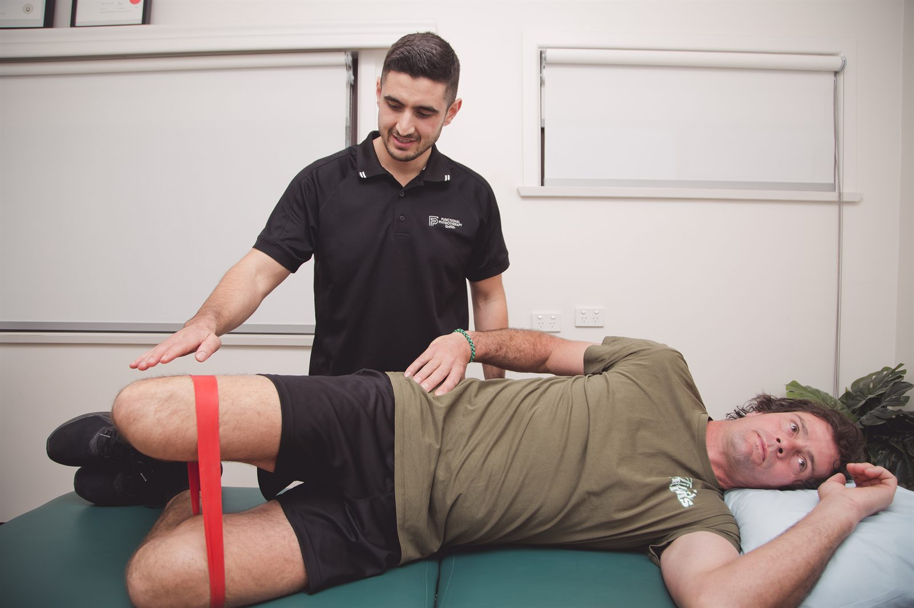

Hip and groin physiotherapy at our Dapto clinic includes assessment of painful walking, restricted movement and activity-related symptoms. We explain whether rehabilitation is suitable or whether a medical cause needs investigation first.

Pain from the hip joint may be felt in the groin or thigh. Symptoms on the outside of the hip can involve nearby tendons and other soft tissues, often described as greater trochanteric pain syndrome. Lower-back problems can also refer pain into this region.
A groin strain after kicking or changing direction is different from gradual joint stiffness. We ask about the onset and the movements that provoke symptoms, rather than assigning a diagnosis from location alone.
Groin pain can also have non-musculoskeletal causes, including a hernia or a testicular problem. A new lump, abdominal symptoms or testicular pain needs medical assessment. Physiotherapy is only appropriate once relevant medical causes have been considered.
Tell us whether the main difficulty is sitting, getting started after rest, lying on your side or being active. If you play sport, we will ask about recent changes in training and which movements you cannot currently manage.
Your assessment may include hip movement, walking and muscle strength, with checks of the lower back where relevant. The examination is adjusted if the hip is too painful to load. We explain what the findings suggest and whether you should see your GP or have further investigation.
Scan terms such as a labral tear or femoroacetabular impingement, often shortened to FAI, need to be considered alongside the examination. A scan label does not provide the whole rehabilitation plan.
Once the likely cause is established, treatment may involve exercises for hip strength and movement, along with changes to activities or positions that aggravate symptoms. Someone with outer-hip pain at night may need different advice from someone returning to kicking after a groin strain.
For hip osteoarthritis, exercise is an important part of management. The choice and progression should suit your current ability. We may work on everyday tasks such as rising from a chair, walking further or using stairs, and review how you respond.
For a sporting muscle injury, later rehabilitation needs to address the demands of the sport. That might mean progressing towards acceleration, direction changes or kicking once earlier activity is manageable. The sports injury page explains our broader return-to-sport approach.
If you have had hip surgery, the procedure and your surgeon's restrictions guide rehabilitation. Bring those instructions before we introduce new exercises or change weight-bearing activity.
Seek emergency assessment for severe hip pain after a fall, inability to walk or bear weight, or loss of feeling after an injury. A hot, swollen hip with fever or feeling unwell needs urgent medical care.
Sudden severe testicular pain needs immediate emergency assessment. Severe groin or abdominal pain with a painful lump or vomiting also needs urgent medical attention. Do not treat these symptoms as a muscle strain.
Gradually worsening hip or groin pain during weight-bearing activity also deserves assessment, particularly if you have recently increased training. Avoid pushing through it while waiting for advice.
Knee assessment for pain on stairs, swelling, tendon problems, arthritis and injuries.
Read moreConditionHands-on treatment and targeted exercise for back and neck pain.
Read moreServiceDiagnosis, treatment and staged return-to-sport rehabilitation for athletes at every level.
Read moreTell us which movements are difficult and whether there has been an injury or operation. Our clinic is inside Dapto Medical Professionals; see Contact for directions.